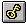

Die Symbolleiste wird horizontal oben im Anwendungsfenster unterhalb der Menüleiste angezeigt. Sie stellt per Maus schnellen Zugriff auf viele Tools von CrypTool bereit.
Um die Symbolleiste ein- oder auszublenden, können Sie aus dem Menü Ansicht den Befehl Symbolleiste auswählen (ALT-A-S).
Sie können die Symbolleiste auch an einen beliebigen anderen Rand von CrypTool verschieben. Dazu klicken Sie mit der Maus auf einen Teil der Symbolleiste, in dem sich kein Knopf befindet, und bewegen die Maus bei weiterhin gedrückter Taste (das nennt man ziehen) auf einen der Ränder von CrypTool und lassen daraufhin die Maustaste los.
Falls Sie die Symbolleiste auf einen anderen Bereich des Bildschirms ziehen, so wird die Symbolleiste in einem eigenen Fenster, das verschoben und in der Größe verändert werden kann, dargestellt.

Die Online-Hilfe für das jeweilige Symbol bekommen Sie, indem Sie zuerst  klicken und dann mit der linken Maustaste auf ein Symbol klicken. Das geht z.B. auch, wenn Sie als zweites auf ein Menü klicken.
klicken und dann mit der linken Maustaste auf ein Symbol klicken. Das geht z.B. auch, wenn Sie als zweites auf ein Menü klicken.
| Schaltfläche | Aktion |
 |
Öffnet ein neues Dokument. |
 |
Öffnet ein bestehendes Dokument. CrypTool zeigt den Dialog Öffnen an, in dem Sie die gewünschte Datei finden und öffnen können. |
 |
Schließt das aktive Dokument. |
 |
Speichert das aktive Dokument oder die aktive Vorlage unter dem aktuellen Namen. Wenn Sie das Dokument noch nicht benannt haben, zeigt CrypTool den Dialog Speichern unter an. |
 |
Druckt das aktive Dokument. |
 |
Entfernt die markierten Daten aus dem Dokument und überträgt sie in die Zwischenablage. |
 |
Kopiert die markierten Daten in die Zwischenablage. |
 |
Fügt den Inhalt der Zwischenablage an der aktuellen Cursorposition ein. |
|  | Zeigt den Schlüssel des aktiven Dokuments an (nur bei klassischen und symmetrischen Verfahren). |
 |
Springt zum übergeordneten Fenster des aktiven Dokuments. |
 |
Zeigt die Beteiligten, die Version und das Copyright von CrypTool an. |
|
Ruft die Hilfe zu CrypTool auf. |